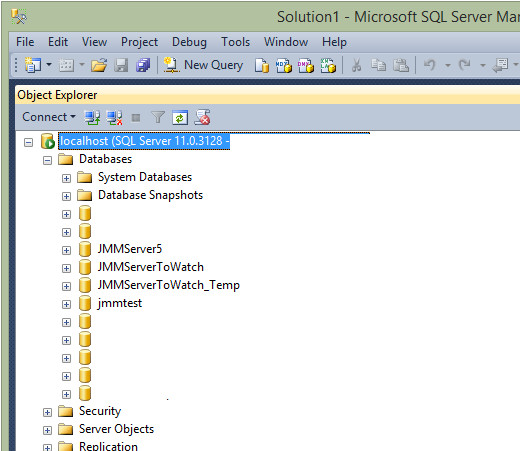
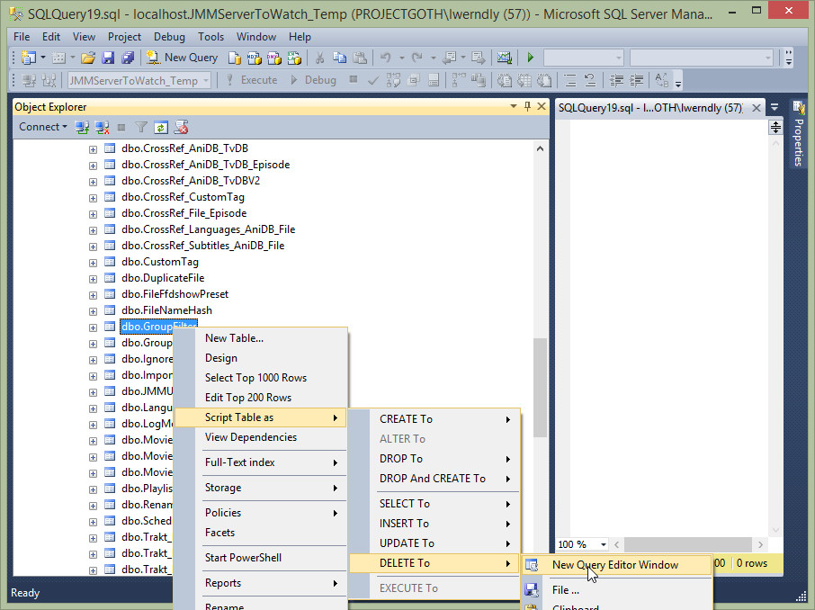
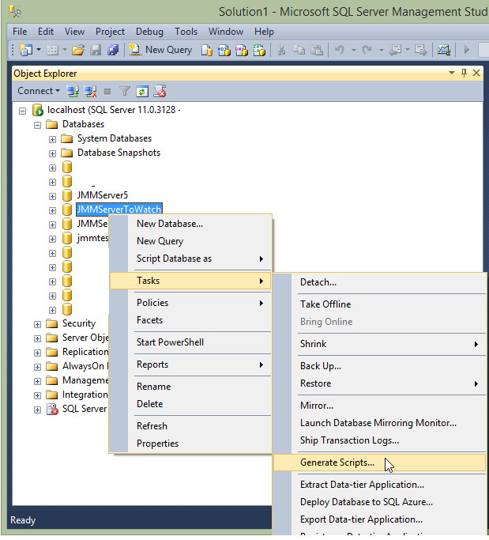
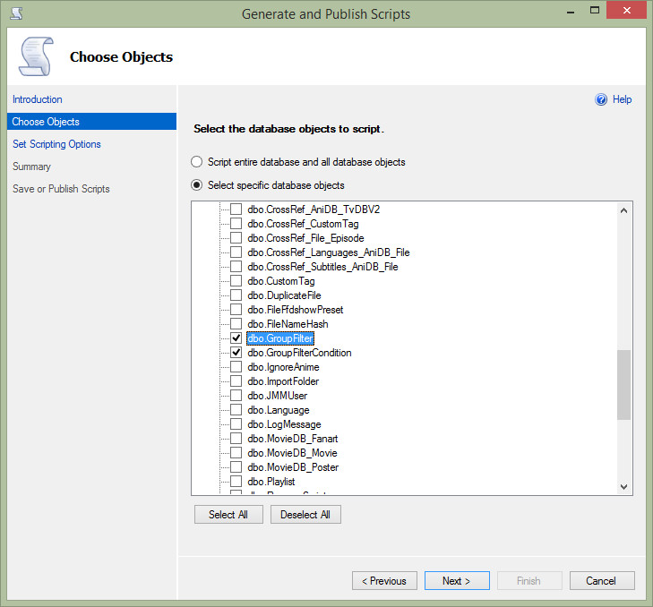
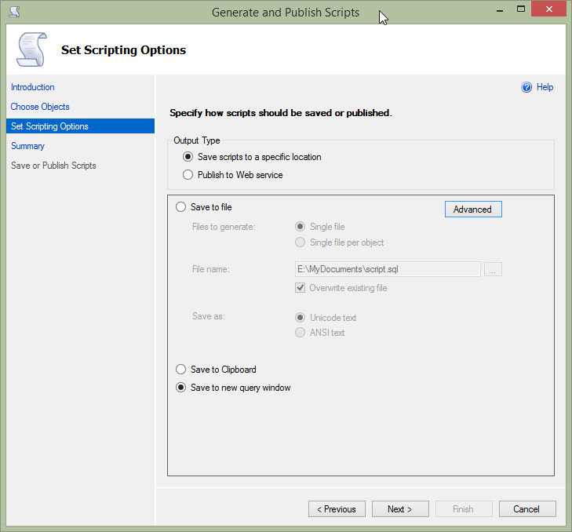
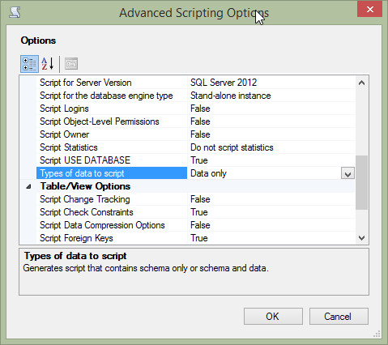
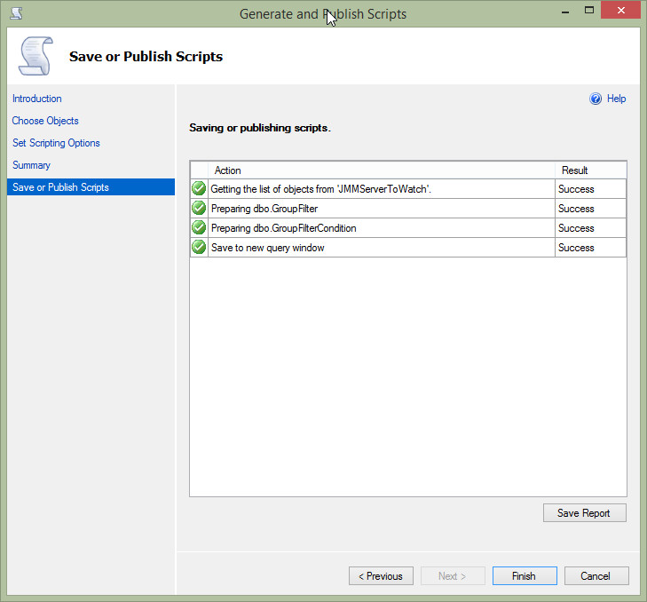
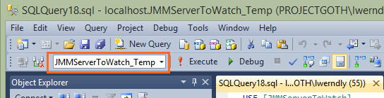

SQL Server FAQ
Contents
1. Backing up your databases2. Migrating Group Filters from one database to another
Backing up your databases
Migrating Group Filters from one database to another
You may want to do this if you have started a new SQL Server database, and want to keep the Group Filters you created previously
SQL Server Management Studio
Open SQL Server Management Studio, and expand the database list
Make sure JMM Server is NOT running
Make sure you have taken back ups of both database before you start

For your NEW database, expand the tables view and delete all the records from the following 2 tables
- GroupFilter
- GroupFilterCondition

This will create a sql script which looks something like the following
USE [JMMServerToWatch_Temp]
GO
DELETE FROM [dbo].[GroupFilter]
WHERE Search Conditions,,
GO
Delete the WHERE line, so it now looks like the following
USE [JMMServerToWatch_Temp]
GO
DELETE FROM [dbo].[GroupFilter]
GO
Press F5 to execute the script and delete all the rows from table. Repeat for GroupFilterCondition table (or directly change the name of the table in the script)
Now we can move onto migrating the data from the OLD database to the new database
For your OLD database, right click on the name and select Tasks -> Generate scripts

Select the options shown below and click the Next Button

Select the options shown below and click the Advanced Button

Change only the following option Types of Data to script to Data Only

You should then see the following screen after pressing Next

Pressing finish should open a new query windows, where the script looks like something along the following lines
Delete the WHERE line, so it now looks like the following
USE [JMMServerToWatch]
GO
SET IDENTITY_INSERT [dbo].[GroupFilter] ON
GO
INSERT [dbo].[GroupFilter] ([GroupFilterID], [GroupFilterName], [ApplyToSeries], [BaseCondition], [SortingCriteria], [Locked]) VALUES (1, N'Favorites', 0, 1, NULL, NULL)
GO
INSERT [dbo].[GroupFilter] ([GroupFilterID], [GroupFilterName], [ApplyToSeries], [BaseCondition], [SortingCriteria], [Locked]) VALUES (8, N'Continue Watching (SYSTEM)', 0, 1, N'4;2', 1)
GO
SET IDENTITY_INSERT [dbo].[GroupFilter] OFF
GO
SET IDENTITY_INSERT [dbo].[GroupFilterCondition] ON
GO
INSERT [dbo].[GroupFilterCondition] ([GroupFilterConditionID], [GroupFilterID], [ConditionType], [ConditionOperator], [ConditionParameter]) VALUES (1, 1, 14, 1, N'')
GO
INSERT [dbo].[GroupFilterCondition] ([GroupFilterConditionID], [GroupFilterID], [ConditionType], [ConditionOperator], [ConditionParameter]) VALUES (2, 2, 22, 1, N'')
GO
INSERT [dbo].[GroupFilterCondition] ([GroupFilterConditionID], [GroupFilterID], [ConditionType], [ConditionOperator], [ConditionParameter]) VALUES (3, 3, 18, 9, N'10')
GO
INSERT [dbo].[GroupFilterCondition] ([GroupFilterConditionID], [GroupFilterID], [ConditionType], [ConditionOperator], [ConditionParameter]) VALUES (4, 4, 7, 9, N'200')
GO
INSERT [dbo].[GroupFilterCondition] ([GroupFilterConditionID], [GroupFilterID], [ConditionType], [ConditionOperator], [ConditionParameter]) VALUES (5, 5, 1, 1, N'')
GO
SET IDENTITY_INSERT [dbo].[GroupFilterCondition] OFF
GO
Delete the following section from the script, as this refers to the old database
USE [JMMServerToWatch]
GO
Then change the database in the toolbar, to point to the NEW database

Press F5 to execute the script and you should now have your old group filters in the new database. Start up JMM Server and test it out